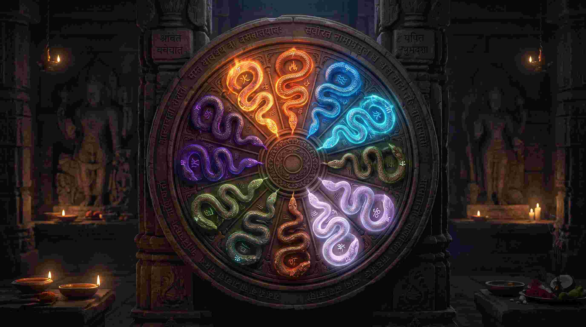
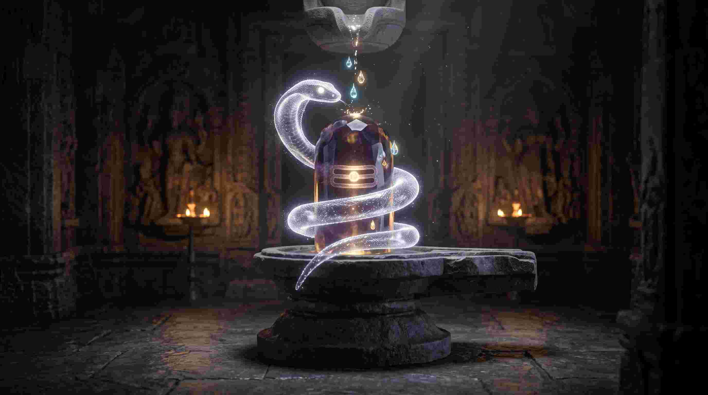

ज्योतिष की दुनिया में "कालसर्प दोष" (Kaal Sarp Dosh) से ज्यादा डरावना और कुख्यात शब्द शायद ही कोई दूसरा हो। 90% लोग इस दोष का नाम सुनते ही घबरा जाते हैं। उन्हें लगता है कि उनके जीवन में अब केवल विनाश, दरिद्रता, विवाह टूटना और बीमारियां ही लिखी हैं। कई तथाकथित ज्योतिषी इसी डर का फायदा उठाकर हजारों-लाखों रुपये की पूजा करवाते हैं।
लेकिन आज मैं, ज्ञानेंद्र सिंह तोमर—एक मेडिकल छात्र और वैदिक ज्योतिषी—आपके सामने इस दोष का पूरा तार्किक और वैज्ञानिक चीरहरण (Anatomy) करूंगा। मैं आपको बताऊंगा कि सचिन तेंदुलकर, धीरूभाई अंबानी, जवाहरलाल नेहरू और नेल्सन मंडेला जैसे विश्व के सबसे सफल लोगों की कुंडली में कालसर्प दोष क्यों था? क्या यह वास्तव में कोई श्राप है, या यह ब्रह्मांड की वह 'जेनेटिक कोडिंग' (Genetic Coding) है जो आपको साधारण से असाधारण बनाने के लिए मजबूर करती है?
"कालसर्प दोष कोई सांप का काटा हुआ श्राप नहीं है। यह आपकी मनोवैज्ञानिक (Psychological) और जेनेटिक (DNA) संरचना का वह ऊर्जा-लूप (Energy Loop) है जो आपको तब तक बेचैन रखता है, जब तक आप अपनी पूरी क्षमता को प्राप्त नहीं कर लेते।"
1. कालसर्प दोष क्या है? (खगोलीय और ज्योतिषीय परिभाषा)
खगोल विज्ञान (Astronomy) में राहु (Rahu) और केतु (Ketu) कोई भौतिक ग्रह नहीं हैं; ये चंद्रमा के परिक्रमा पथ और पृथ्वी के परिक्रमा पथ के कटान बिंदु (Intersection points) हैं। जब जन्म कुंडली में सूर्य, चंद्र, मंगल, बुध, गुरु, शुक्र और शनि—ये सातों मुख्य ग्रह राहु और केतु की धुरी (Axis) के एक ही तरफ (One side) आ जाते हैं, तो कालसर्प योग या दोष का निर्माण होता है।
कल्पना करें कि राहु सर्प का सिर है और केतु उसकी पूंछ है। जब सभी ग्रह इस सर्प के पेट के अंदर बंद हो जाते हैं, तो ग्रहों की ऊर्जा बंध जाती है। व्यक्ति को अपने जीवन के शुरुआती वर्षों में भयंकर संघर्ष करना पड़ता है। ऐसा लगता है जैसे हर काम 99% पर आकर रुक जाता है।
2. कालसर्प दोष और हमारा DNA: मेडिकल एस्ट्रोलॉजी का नजरिया
यदि आप मेडिकल साइंस के छात्र हैं, तो आपने DNA का डबल हेलिक्स (Double Helix) ढांचा जरूर देखा होगा। प्राचीन ग्रंथों में जो 'सर्प' या 'कुण्डलिनी' (Kundalini) की शक्ति बताई गई है, वह वास्तव में हमारे शरीर के इसी DNA स्ट्रक्चर का प्रतीक है। राहु और केतु इसी जेनेटिक लूप को दर्शाते हैं।
जब किसी की कुंडली में कालसर्प दोष होता है, तो उसका मतलब है कि उसके जेनेटिक्स (Genetics) और अवचेतन मन (Subconscious mind) में पिछले जन्मों के कुछ 'कर्मों का डेटा' (Karmic Data) फंसा हुआ है। यह व्यक्ति को एक अजीब सी घबराहट (Anxiety), बेचैनी, और कभी न खत्म होने वाली भूख (Hunger for success) देता है। यही कारण है कि ऐसे लोग अक्सर अपनी रातों की नींद खो देते हैं। उनकी न्यूरोलॉजिकल वायरिंग (Neurological wiring) आम इंसान से बहुत तेज काम करती है।
3. कालसर्प दोष के 12 मुख्य प्रकार (12 Types of Kaal Sarp Dosh)
राहु और केतु कुंडली के जिन भावों (Houses) में बैठते हैं, उनके अनुसार कालसर्प दोष 12 प्रकार का होता है। हर प्रकार का प्रभाव अलग होता है:

- अनंत कालसर्प (Anant Kaal Sarp): जब राहु लग्न (1st) में और केतु सप्तम (7th) में हो। व्यक्ति का व्यक्तित्व बहुत प्रभावशाली होता है, लेकिन वैवाहिक जीवन में भयानक तनाव और साझेदारी (Partnerships) में धोखा मिलता है।
- कुलिक कालसर्प (Kulik Kaal Sarp): राहु दूसरे (2nd) और केतु आठवें (8th) भाव में। ऐसे व्यक्ति को अचानक धन हानि होती है और पैतृक संपत्ति को लेकर विवाद रहते हैं। वाणी बहुत तीखी हो जाती है।
- वासुकी कालसर्प (Vasuki Kaal Sarp): राहु तीसरे (3rd) और केतु नौवें (9th) भाव में। भाई-बहनों से संबंध खराब होते हैं। व्यक्ति को अपनी मेहनत का फल बहुत देर से मिलता है, लेकिन वह पराक्रमी होता है।
- शंखपाल कालसर्प (Shankhpal Kaal Sarp): राहु चौथे (4th) और केतु दसवें (10th) भाव में। माता का सुख कम मिलता है। घर में अशांति रहती है, और करियर में बार-बार उतार-चढ़ाव आते हैं।
- पद्म कालसर्प (Padma Kaal Sarp): राहु पांचवें (5th) और केतु ग्यारहवें (11th) भाव में। शिक्षा में रुकावटें, प्रेम प्रसंगों में असफलता और संतान प्राप्ति में कठिनाई होती है।
- महापद्म कालसर्प (Mahapadma Kaal Sarp): राहु छठे (6th) और केतु बारहवें (12th) भाव में। व्यक्ति शत्रुओं से घिरा रहता है, बीमारियों का पता नहीं चलता (Autoimmune issues), और खर्चे बहुत होते हैं।
- तक्षक, कर्कोटक, शंखचूड़, पातक, विषाक्त और शेषनाग: ये अन्य 6 प्रकार भी राहु और केतु की बाकी भावों में स्थिति के आधार पर बनते हैं। (विस्तृत विश्लेषण के लिए आप अपनी कुंडली हमसे चेक करवा सकते हैं।)
4. तो फिर सचिन तेंदुलकर और धीरूभाई अंबानी सफल कैसे हुए?
यह सबसे महत्वपूर्ण भाग है। यदि कालसर्प दोष इतना ही विनाशकारी है, तो सचिन तेंदुलकर (क्रिकेट के भगवान), धीरूभाई अंबानी (रिलायंस के संस्थापक) और नेल्सन मंडेला महान कैसे बन गए? इन सभी की कुंडलियों में भयंकर कालसर्प योग था।
रहस्य यह है: कालसर्प योग एक 'स्प्रिंग' (Spring) की तरह है। राहु और केतु आपके जीवन को जितना नीचे दबाते हैं (संघर्ष, अपमान, असफलता), यह स्प्रिंग उतनी ही ताकत से चार्ज होती है। 40 से 42 वर्ष की आयु के बाद (जब राहु परिपक्व होता है), यह स्प्रिंग खुलती है और व्यक्ति को ऐसी अपार सफलता और ऊंचाई पर ले जाती है जहाँ आम आदमी कभी नहीं पहुंच सकता। कालसर्प दोष आपको साधारण जीवन जीने ही नहीं देता—यह या तो आपको पूरी तरह तोड़ देगा, या आपको 'महानायक' बना देगा। यह आपकी इच्छाशक्ति (Willpower) पर निर्भर करता है।
5. कालसर्प दोष के अचूक वैज्ञानिक और वैदिक उपाय (Remedies)
आपको किसी महंगे पाखंड या डरावने अनुष्ठान की आवश्यकता नहीं है। यदि आप कालसर्प दोष से पीड़ित हैं, तो आपको इस ऊर्जा (Energy) को 'चैनल' (Channelize) करना होगा:

- भगवान शिव की उपासना (रुद्राभिषेक): राहु और केतु सर्प हैं, और भगवान शिव ने सर्पों को अपने गले में धारण किया हुआ है। शिव ही एकमात्र ऐसी ऊर्जा हैं जो राहु (विष) को नियंत्रित कर सकती है। सावन के महीने में या किसी सोमवार को शिवलिंग पर जल और कच्चा दूध चढ़ाना (रुद्राभिषेक) आपके न्यूरोलॉजिकल सिस्टम को तुरंत शांत करता है।
- चांदी के नाग-नागिन: बहते हुए साफ जल (नदी) में तांबे या चांदी के छोटे नाग-नागिन के जोड़े को प्रवाहित करना। जल 'चंद्रमा' (मन) का प्रतीक है और सर्प 'राहु' का। राहु को जल में प्रवाहित करने से मन के अज्ञात भय (Phobias) शांत होते हैं।
- मेडिटेशन और योग (Kundalini Yoga): चूंकि यह दोष आपके DNA और स्पाइनल कॉर्ड (Spine) से जुड़ा है, इसलिए अनुलोम-विलोम (Pranayama) और ध्यान (Meditation) राहु की उलझी हुई ऊर्जा को खोलता है।
- नाग पंचमी की पूजा: वर्ष में एक बार नाग पंचमी के दिन विधिवत पूजा और किसी शिव मंदिर में दान करना अत्यंत फलदायी होता है।
- पशु-पक्षियों की सेवा: राहु और केतु जीवों से जुड़े हैं। सड़क के कुत्तों (Street Dogs) को रोटी खिलाना और पक्षियों को बाजरा डालना राहु-केतु के खराब प्रभावों को काटता है।
निष्कर्ष: डरें नहीं, अपनी ऊर्जा को पहचानें
कालसर्प दोष कोई मौत का फरमान नहीं है। यह ब्रह्मांड का एक संकेत है कि आपका जन्म किसी साधारण नौकरी या आम जीवन के लिए नहीं हुआ है। शुरुआत में यह आपको रुलाएगा, आपकी परीक्षा लेगा, आपके अपनों से आपको धोखा दिलवाएगा—ताकि आप दुनिया की मोह-माया से बाहर निकलें और अपने भीतर छिपी हुई असली 'कुण्डलिनी शक्ति' (Inner Power) को जगाएं।
यदि आपकी कुंडली में कालसर्प दोष है, तो इसे एक 'चुनौती' के रूप में स्वीकार करें। भगवान शिव की शरण लें, अपना फोकस एक लक्ष्य पर अर्जुन की तरह लगाएं, और फिर देखिए कैसे यही दोष आपको दुनिया के शीर्ष (Top) पर ले जाता है। ज्योतिष तर्क आपको डराता नहीं है, यह आपको आपके असली स्वरूप से मिलाता है!